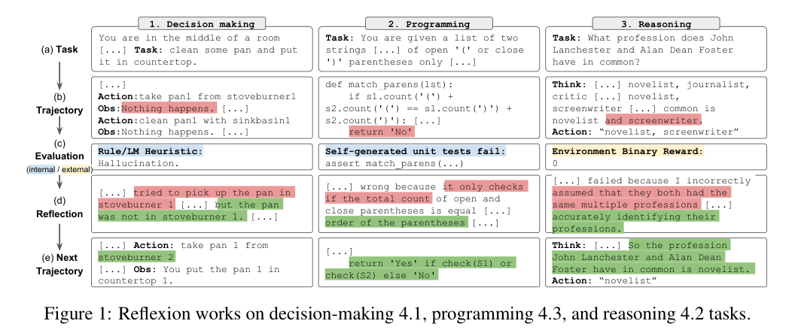
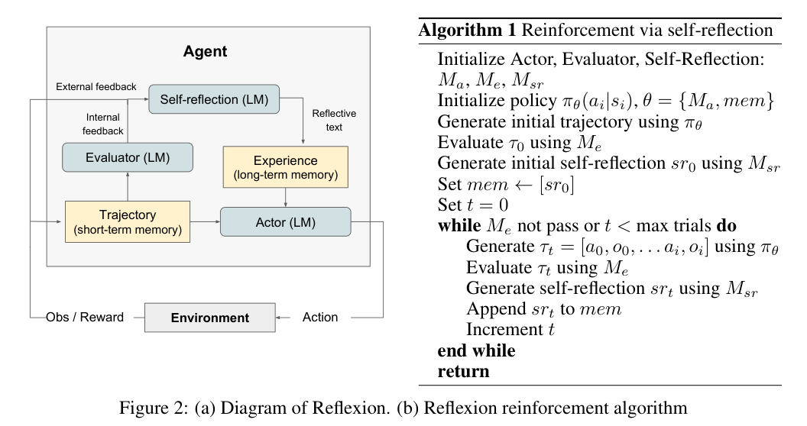
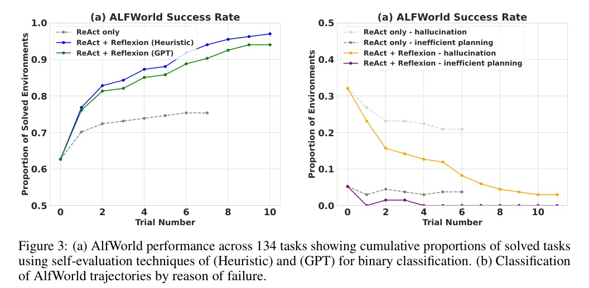
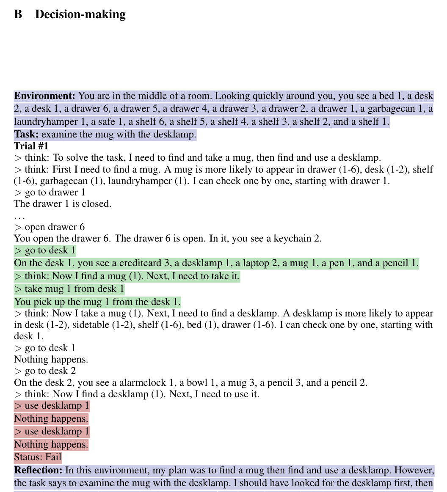
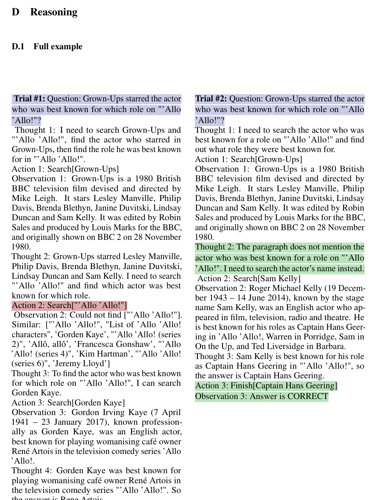
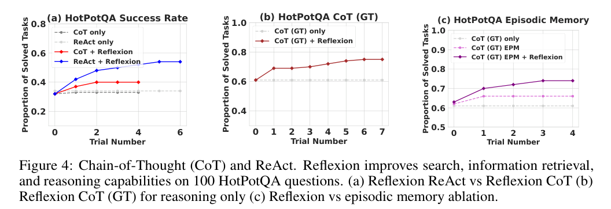

Reflexion: 언어적 강화학습을 갖춘 자율 언어 에이전트
대규모 언어 모델(LLM) 기반의 인공지능 에이전트는 복잡한 환경에서 지속적으로 오류를 범하고, 자신의 실패로부터 학습하지 못하는 치명적인 한계가 있다. 전통적인 강화학습(RL)은 신경망 가중치를 업데이트하기 위해 수천 번의 상호작용과 정교한 보상 설계(Reward engineering)를 요구하므로 수백억~수천억 파라미터를 가진 대형 모델에 적용하기에는 비용이 극도로 크다.
본 논문에서는 신경망 가중치를 단 한 번도 업데이트하지 않고도 언어적 피드백(Verbal Feedback)을 통해 언어 에이전트를 강화하는 새로운 프레임워크인 Reflexion을 제안한다. Reflexion 에이전트는 작업 수행 후 자신의 행동 궤적과 평가 신호를 되돌아보며 자연어로 된 '자기반성(Self-Reflection)' 텍스트를 생성하고, 이를 장기 기억 버퍼(Long-term Memory)에 저장한다. 이후 후속 시도에서 이 기억을 컨텍스트로 불러와 이전 실수를 반복하지 않고 최적의 경로를 찾아간다.
실험 결과, 의사결정 과제(ALFWorld 97% 성공률 달성), 다단계 추론(HotpotQA), 그리고 코드 생성(HumanEval 91.0% 달성, LeetCode Hard 난제 해결) 전반에서 기존의 CoT 및 ReAct 에이전트를 압도하는 자가 개선 능력을 입증하였다.

1. 서론 (Introduction)
인간이 새로운 기술을 배우거나 난제를 해결할 때를 떠올려보자. 인간은 시행착오(Trial and error)를 겪으며 즉각적으로 뇌 세포의 모든 연결 가중치를 수학적으로 재조정하지 않는다. 대신 "내가 왜 이 연산에서 틀렸지? 아, 인덱스 범위를 1만큼 벗어났구나. 다음번엔 반복문의 종료 조건을 수정해야겠다"와 같이 자연어로 된 자기비판과 반성을 수행하고, 이를 기억해 두었다가 다음 번 시도에 반영한다.
그러나 기존의 LLM 에이전트(예: ReAct, CoT)는 단일 시도(Single-trial) 에이전트에 불과했다. 실패하더라도 왜 실패했는지 기억하지 못하고, 새로운 프롬프트가 주어지면 똑같은 오류를 무한히 반복했다. 이를 해결하기 위해 우리는 대규모 언어 모델의 언어 이해 및 추론 능력을 '보상 및 피드백 신호' 자체로 사용하는 언어적 강화학습(Verbal Reinforcement Learning)의 개념을 도입한다.
2. Reflexion 프레임워크 아키텍처
Reflexion은 에이전트가 단기적 상호작용뿐만 아니라 여러 번의 에피소드(시도, Trial)를 거치며 스스로 학습할 수 있도록 다음 4가지 핵심 모듈로 구성된다:

2.1 4대 핵심 구성 모듈
- 단기 기억(Short-term): 현재 에피소드 내에서의 세부 상호작용 히스토리.
- 장기 기억(Long-term): 이전 시도들에서 축적된 자기반성 텍스트 목록 $\{sr_1, sr_2, \dots\}$. 후속 시도 시 프롬프트에 주입되어 행동을 가이드한다.
2.2 자기반성 강화 알고리즘
알고리즘은 최대 $N$번의 시도(Trial) 동안 반복된다:
- 에이전트(Actor)는 메모리에 누적된 이전 반성 내용($\text{mem}$)을 참고하여 궤적 $\tau_t$를 생성한다.
- 평가자(Evaluator)가 성패를 판정한다. 과제가 성공하면 즉시 종료하고 결과를 반환한다.
- 실패한 경우, 자기반성 모델이 현재의 실패 궤적을 분석하여 피드백 $sr_t$를 작성하고 이를 메모리에 추가한다.
- 다음 시도 $t+1$로 넘어가 새로운 전략으로 문제를 다시 푼다.
3. 실험 및 실증 평가 (Experiments & Results)
3.1 순차적 의사결정: ALFWorld & WebShop
가상 환경 과제인 ALFWorld 134개 태스크에서 ReAct 베이스라인은 73%의 성공률에 머물렀다. 그러나 Reflexion을 적용하자 시도가 거듭될수록 실패했던 태스크들을 자가 수정하며 최종 97%의 압도적인 성공률을 달성하였다.


3.2 지식 추론: HotpotQA
다단계 질문 응답 벤치마크인 HotpotQA에서도 Reflexion은 이전 검색 실패 원인을 분석하여(예: "동명이인과 혼동함", "검색 키워드가 너무 포괄적이었음") 후속 시도에서 검색 질의어를 정교화함으로써 상당한 정확도 향상을 이끌어냈다.

3.3 코드 작성 및 디버깅: HumanEval & LeetCode
Reflexion의 진가가 가장 극명하게 드러난 도메인은 코드 생성 및 자가 디버깅(Self-debugging)이다. 컴파일러 에러 메시지와 유닛 테스트 실패 결과를 Evaluator의 피드백으로 활용하여, 에이전트가 코드의 버그를 스스로 찾고 고칠 수 있도록 했다.

- HumanEval (Python): 기존 GPT-4의 제로샷 점수(80.1%)를 91.0%까지 끌어올렸다.
- LeetCode Hard: 기존 언어 모델들이 거의 풀지 못하던 고난도 알고리즘 문제에서도 런타임 오류 및 시간 초과 원인을 분석하여 스스로 정답 코드를 완성했다.
4. 어블레이션 및 심층 분석 (Ablation Study)
연구진은 다음 변형들과 비교하여 자기반성의 기여도를 검증하였다:
- 단순 재시도(Naïve retry): 피드백 없이 단순히 문제를 다시 풀게 함 → 성능 향상이 미미하거나 동일한 실수를 반복함.
- 스칼라 보상만 제공(Scalar reward): "틀렸음(-1점)"이라는 점수만 알려줌 → 무엇이 틀렸는지 알지 못해 무작위 탐색에 그침.
- 언어적 자기반성(Verbal Self-reflection): "반복문 내부의 변수 업데이트 누락"과 같이 구체적 언어 피드백을 줄 때만이 압도적인 성능 도약을 견인함.
5. 고찰 및 미래 연구 (Discussion)
Reflexion은 에이전트에게 '메타인지(Metacognition)'와 '에피소드 기억(Episodic Memory)'을 부여했다는 점에서 AI Agent 아키텍처의 중대한 이정표이다. 최근 등장한 자율 코딩 에이전트(Devin, Cursor, Claude Engineer 등)가 터미널 실행 오류를 읽고 스스로 코드를 수정하는 메커니즘의 이론적 토대가 바로 이 논문이다.
6. 결론 (Conclusions)
Reflexion은 값비싼 모델 파인튜닝 없이도, 자연어 자기반성과 메모리 버퍼를 결합하여 에이전트가 과거의 실패로부터 배우도록 만드는 혁신적인 언어적 강화학습 프레임워크이다. 의사결정, 논리 추론, 복잡한 프로그래밍 전 영역에서 탁월한 적응력을 입증하였다.